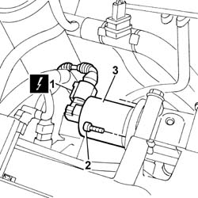

1080C26 MOTOR FOR EGR VALVE SELF-ADJUSTMENT - R.R.
- Path
- Procedures > 10 ENGINE > 1080 EMISSION CONTROL SYSTEM > 1080C MOTOR FOR EGR VALVE SELF-ADJUSTMENT - R.R. > 1080C26 MOTOR FOR EGR VALVE SELF-ADJUSTMENT - R.R.
- Kind
- repair procedure (removal / refitting; the operation number is the code)
- Applies to
- engines: 2.4 JTD 10V; all production periods
- Interactive page
- https://sloeber94.github.io/elrnDB-lThss/en/#/103465
Applies to: all engines; all production periods
 Removing
Removing
 Refitting
RefittingSee in Op. 1016A10
1. Disconnect the electrical connection for the EGR valve self-adjustment motor.
 | Description | Connector |
|---|---|---|
1 | EGR solenoid valve | L030 |
2. Undo the bolts fixing the motor to the EGR valve.
3. Remove the EGR valve self-adjustment motor from the engine compartment.

Applies to: all engines; all production periods
Refitting
Removing- Fit the EGR valve self-adjustment motor.
- Tighten the bolts fixing the motor to the EGR valve.
- Connect the electrical connection for the EGR valve self-adjustment motor.
| Description | Connector |
|---|---|---|
. | EGR solenoid valve | L030 |
See in Op. 1016A10